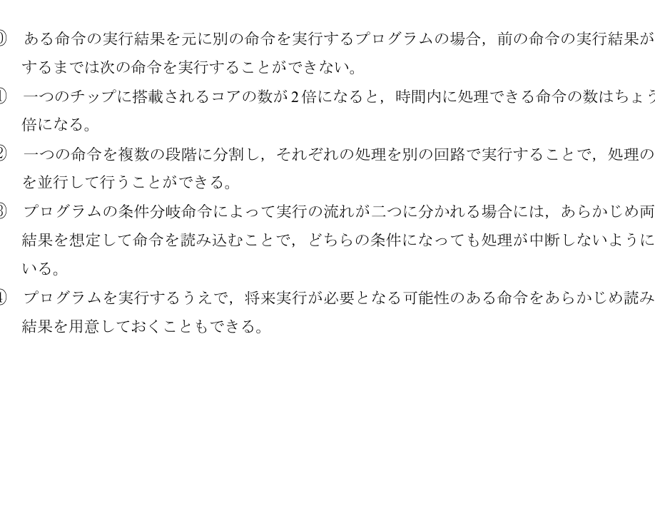

問6：高速化技術の正誤
正解: ①, ③
[問題PDFを開く] [解答PDFを開く] (問6は問題PDFの4ページ、解答PDFの3ページ目です)
ポイント解説
現代のCPUは、単純にクロック周波数を上げるだけでなく、様々な技術を組み合わせて高速化を実現しています。この問題は、それらの技術（マルチコア、パイプライン、分岐予測など）についての基本的な理解を問うものです。
各選択肢の解説
- ① (不適当): 「ある演算結果をもとに次の演算を行う...」場合、前の演算が終わるまで次の演算は開始できません。これをデータハザードと呼び、単純にコアを増やしても解決はできません。
- ② (適当): 一つの命令を複数のステージに分割し、流れ作業��ように並行処理する技術を「パイプライン処理」と呼びます。これにより、見かけ上の処理時間を短縮できます。
- ③ (不適当): 条件分岐命令では、どちらの分岐に進むか結果が確定するまで待つと時間がかかります。そこで「おそらくこちらに進むだろう」と予測して先回りして命令を実行しておく技術を「分岐予測」や「投機実行」と呼びます。しかし、すべての分岐を想定して実行するわけではありません。
- ④ (適当): プログラムの実行順序を解析し、将来必要になりそうな命令をあらかじめメモリから読み込んでおく「命令プリフェッチ」という技術があります。
問題では「適当でないもの」を2つ選ぶため、正解は ① と ③ (順不同) となります。